This paper introduces a second-dimension outlier-driven heterogeneity (SOH) model for
explaining spatial heterogeneity with local outlier configurations. The model derives
multi-scale spatial outlier patterns (SOPs), embeds them in a stratification-detection
workflow, and evaluates individual, interaction, and scale-dependent effects in
Australian barley production.
Abstract
Explaining spatial heterogeneity typically relies on first-dimension covariates that
describe spatial gradients. However, many geographic phenomena also exhibit irregular
and locally extreme structures that are difficult to capture using smooth relationships.
This study proposed a second-dimension outlier-driven heterogeneity (SOH) model, in
which the first dimension refers to covariate variation across space, while the second
dimension represents spatial pattern information captured from local outlier
configurations. SOH derives multi-scale spatial outlier patterns (SOPs) using a
second-dimension outlier model and embeds them in a stratification-detection workflow,
where decision tree-based stratification defines strata and the geographical detector
evaluates explanatory power via the power of determinant (PD). The model supports
evaluation of individual effects, SOP interactions, and SOP-variable interactions, with
assessment of scale dependence across neighbourhood buffers. Application of this model
to spatial heterogeneity in Australian barley production showed that SOPs strengthened
heterogeneity explanation relative to original variables, and that SOP interactions and
SOP-variable interactions yielded synergistic gains in PD. A scale threshold around 200
km was identified, beyond which SOP-only models approached the explanatory performance
of combined models, indicating that multi-scale SOPs captured broad spatial context.
Overall, SOH provides a unified approach for incorporating outlier-driven spatial
patterns into spatial heterogeneity analysis.
Figures and Tables
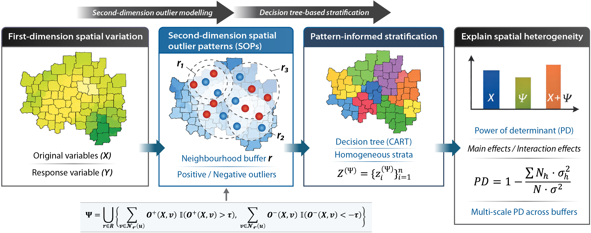
Figure 1. Conceptual framework of the second-dimension outlier-driven heterogeneity (SOH) model.图 1. 第二维度离群值驱动异质性（SOH）模型的概念框架。
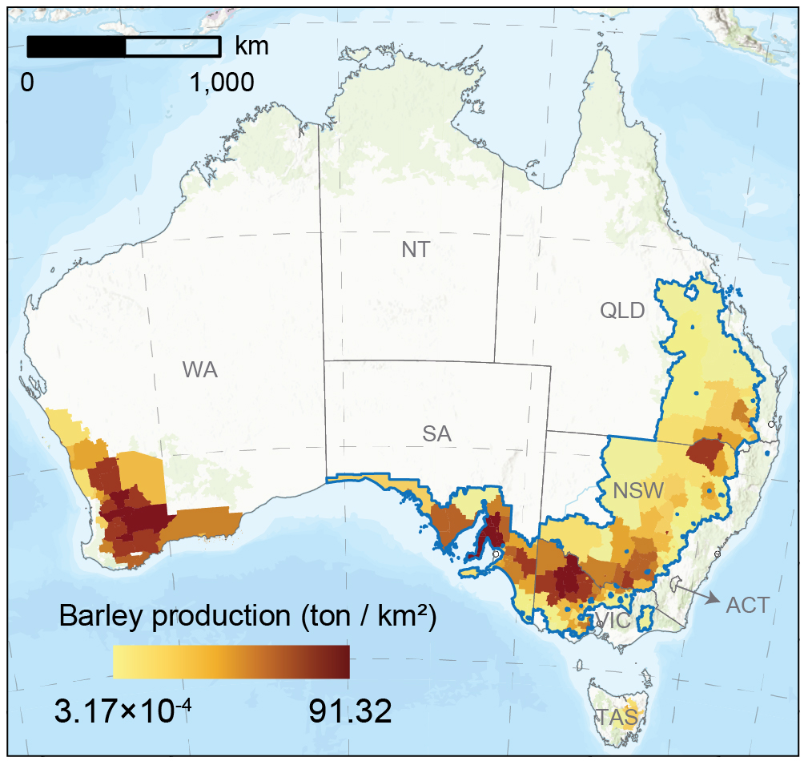
Figure 2. Spatial distribution of barley production normalised by SA2 polygon area (ton/km2) across Australia and the study area. The blue boundary delineates the study area analysed in this study.图 2. 澳大利亚及研究区内按 SA2 多边形面积归一化的大麦产量空间分布。蓝色边界表示本研究分析的研究区。
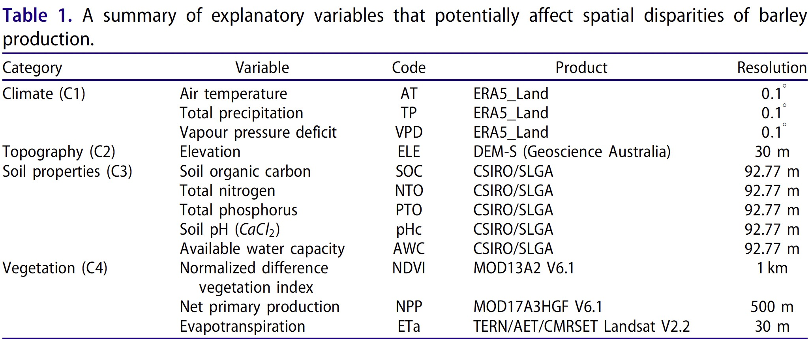
Table 1. A summary of explanatory variables that potentially affect spatial disparities of barley production.表 1. 可能影响大麦产量空间差异的解释变量汇总。
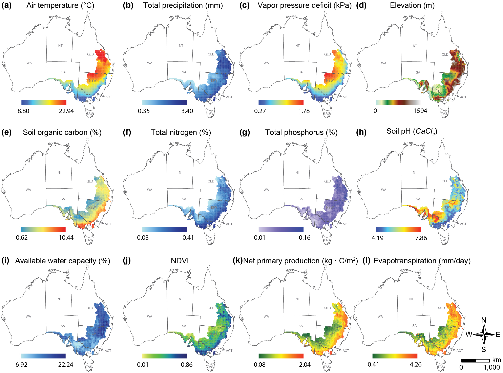
Figure 3. Spatial distribution of explanatory variables for barley production in southeastern Australia. (a)-(c) Climate: air temperature (AT), total precipitation (TP), and vapour pressure deficit (VPD); (d) Topography: elevation (ELE); (e)-(i) Soil properties: soil organic carbon (SOC), total nitrogen (NTO), total phosphorus (PTO), soil pH (CaCl2) (pHc), and available water capacity (AWC); (j)-(l) Vegetation: normalized difference vegetation index (NDVI), net primary production (NPP), and evapotranspiration (ETa).图 3. 澳大利亚东南部大麦产量解释变量的空间分布。
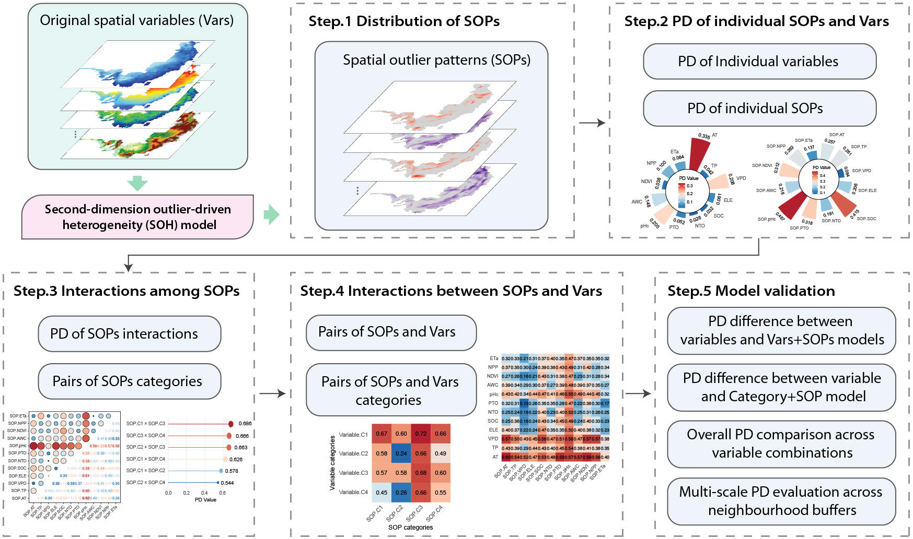
Figure 4. Schematic workflow of SOH modelling for spatial heterogeneity analysis.图 4. 用于空间异质性分析的 SOH 建模流程示意图。
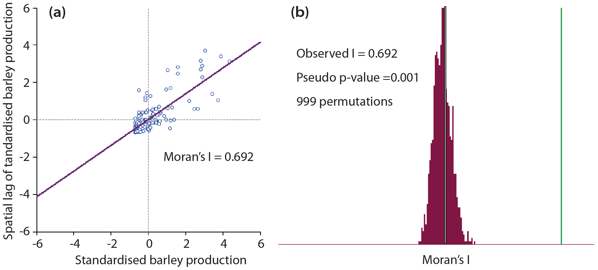
Figure 5. Global Moran's I diagnostic for SA2-level barley production. (a) Moran scatter plot showing the relationship between standardised barley production and its spatial lag. (b) Reference distribution based on 999 random permutations, indicating significant positive spatial autocorrelation in the response variable.图 5. SA2 尺度大麦产量的全局 Moran's I 诊断。
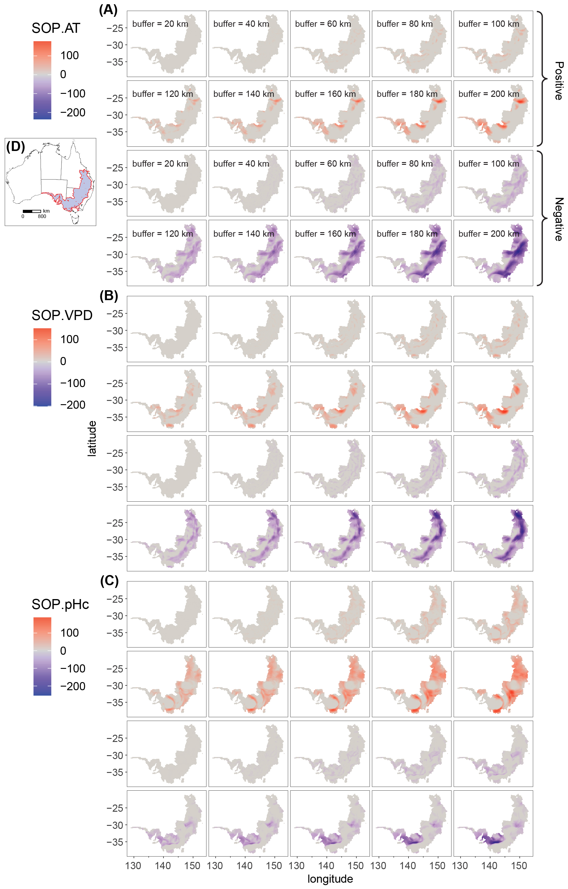
Figure 6. Spatial distribution of second-dimension outlier patterns (SOPs) for the three explanatory variables with the highest PD values in barley production spatial heterogeneity.图 6. 大麦产量空间异质性中 PD 值最高的三个解释变量对应的第二维度离群模式（SOPs）空间分布。
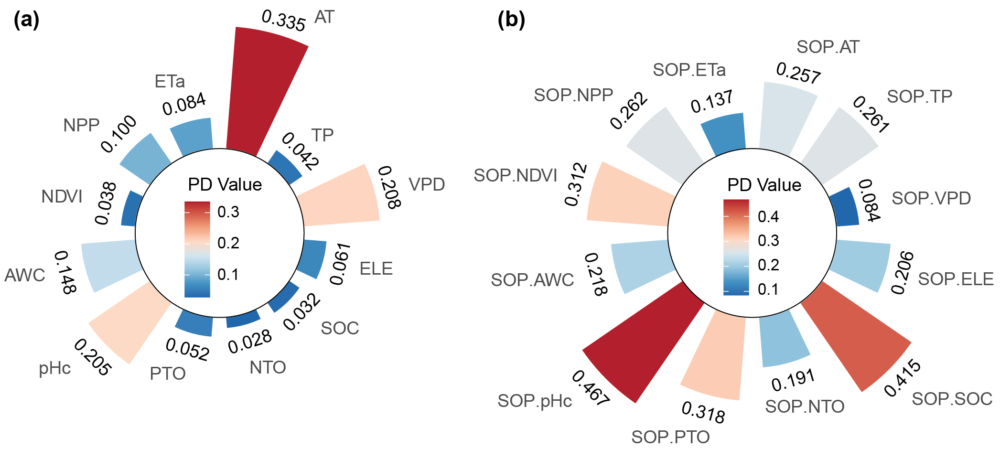
Figure 7. PD values of individual original variables and their corresponding spatial outlier patterns (SOPs) for explaining spatial heterogeneity in barley production. (a) shows PD values of individual original variables, while (b) presents PD values of the corresponding individual SOPs.图 7. 单个原始变量及其对应空间离群模式（SOPs）解释大麦产量空间异质性的 PD 值。
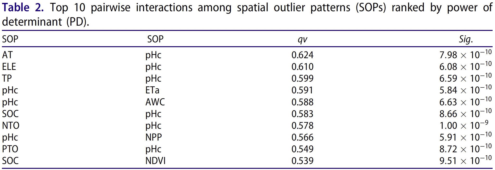
Table 2. Top 10 pairwise interactions among spatial outlier patterns (SOPs) ranked by power of determinant (PD).表 2. 按解释力（PD）排序的空间离群模式（SOPs）前 10 个两两交互。
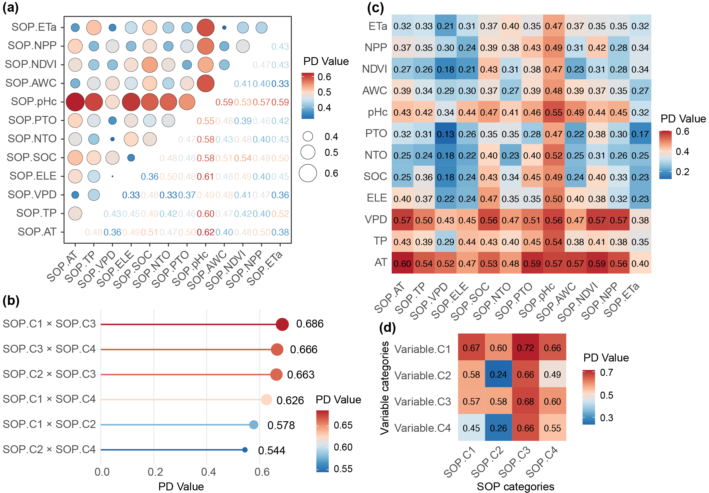
Figure 8. Power of determinant (PD) of interactions among spatial outlier patterns (SOPs) and between SOPs and original spatial variables for explaining spatial heterogeneity in barley production. (a) shows PD values of pairwise interactions among individual SOPs, (b) presents PD values of interactions among SOP categories, (c) illustrates PD values of pairwise interactions between individual original variables and SOPs, and (d) displays PD values of interactions between original variable categories and SOP categories.图 8. SOPs 之间以及 SOPs 与原始空间变量之间交互作用解释大麦产量空间异质性的 PD 值。
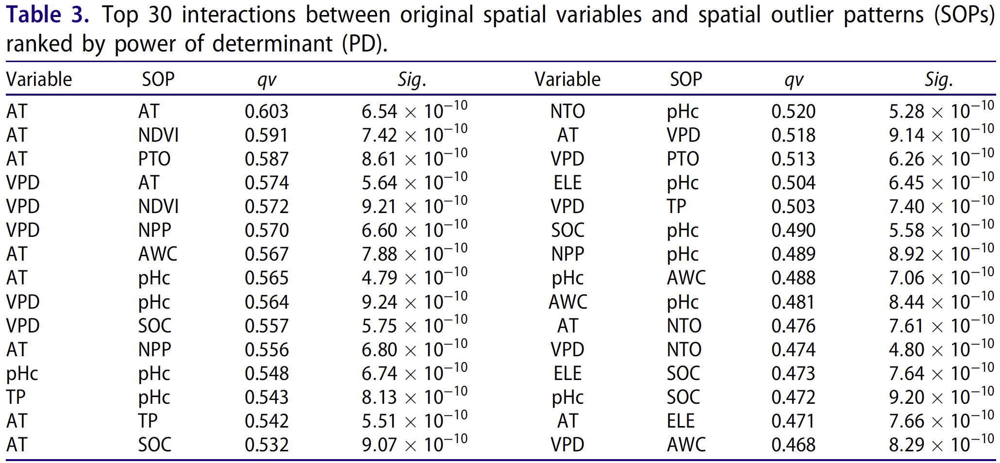
Table 3. Top 30 interactions between original spatial variables and spatial outlier patterns (SOPs) ranked by power of determinant (PD).表 3. 按解释力（PD）排序的原始空间变量与空间离群模式（SOPs）前 30 个交互。
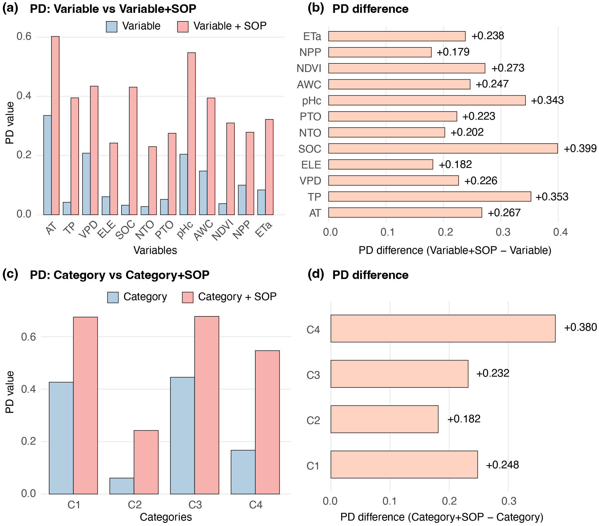
Figure 9. Comparison of power of determinant (PD) values between original variables (or categories) and their SOP-enhanced counterparts. (a) PD values of individual original variables and corresponding Variable+SOP models. (b) PD differences between Variable+SOP and original Variable models, highlighting the contribution of SOPs. (c) PD values of variable categories with and without SOP integration. (d) PD differences between Category+SOP and original Category models.图 9. 原始变量（或类别）与其 SOP 增强对应模型之间的 PD 值比较。
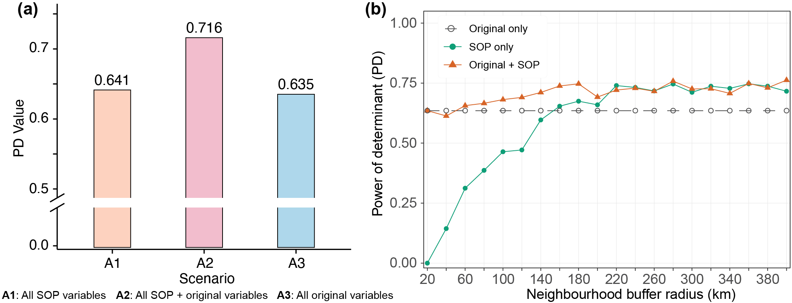
Figure 10. Overall performance and scale sensitivity of the second-dimension outlier-driven heterogeneity (SOH) model. (a) Comparison of PD values for three scenarios: all SOP variables (A1), all SOP variables combined with original variables (A2), and all original variables alone (A3). (b) Variation of PD values across neighbourhood buffer radius for original variables, SOP-only models, and combined Original+SOP models.图 10. 第二维度离群值驱动异质性（SOH）模型的整体表现与尺度敏感性。